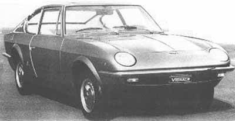
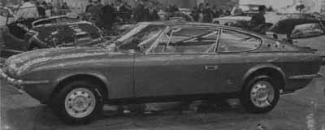
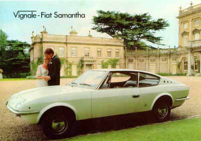

Carrozzeria Vignale · Fiat
Vignale 125/Samantha


Turin Motor Show of 1967.
English brochure

The F. Demetriou Group presents the Vignale-Fiat Samantha
The most beautiful four-seater in the world
Commendatore Alfredo Vignale, long famed for the special prototype and production bodies he has designed and built in Turin for the world’s largest car manufacturers, has produced in the Samantha a luxury car to please himself. Breathtakingly beautiful. The epitome of elegance. Armchair comfort for four people. Massive luggage space. And the exciting performance and advanced engineering embodied in the engine and chassis of the new Fiat 125. The Samantha has the true beauty of line of a car destined to be a classic from the minute it left the drawing board.
Body
Two-door all-steel body giving armchair seating for four; wide-opening doors with burst-proof locks and warning lights in trailing edges; electric window lifts; thief-proof swivelling front quarter lights; door armrests and pockets; fully-reclining front seats; contoured rear seats with companion box and ashtray between; hinged rear quarter lights; grab handles; electrically-heated rear window; four courtesy lights; high beam, fuel, generator and a window heater; hand throttle; two-speed wipers — intermittent and fast; combined wiper-washer pedal; dipping rearview mirror, lockable glovebox; stainless steel ashtray incorporating automatic cigar lighter; electrically-operated swivelling headlights with flasher; wood-rimmed steering wheel; fresh-air heating and ventilation system with two-speed fan and rear extractor ports; concealed interior release for large capacity boot, boot light; reversing light; lockable petrol filler cap; wraparound bumpers front and rear. Choice of 16 colours including six metallic, and five upholstery colours.
Technical data
Front mounted four-cylinder 1608cc engine, compression ratio 8.8:1, 90hp, twin overhead camshafts driven by toothed belt, five-bearing crankshaft, dual-choke downdraught carburettor, recirculating exhaust system. Four-speed all-synchromesh gearbox. Servo-assisted disc brakes all round. Speed: 100mph.
Dimensions
Length 13ft 9in, width 4ft 10in, height 4ft 4½in, fuel tank 10 gallons.
Sole importers and distributors of Vignale-Fiat cars in the United Kingdom and Ireland: F. Demetriou & Son Ltd., 73/9 Queensway, London W2. Tel: 01-229-9266/7. Cables: Demetrosi London W2.
A member of the F. Demetriou Group of Companies. Descriptions and illustrations on this leaflet are indicative only.